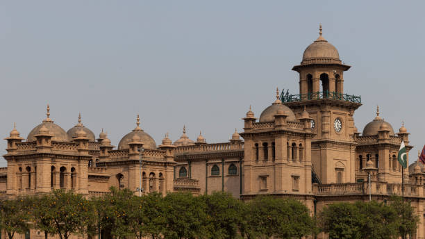
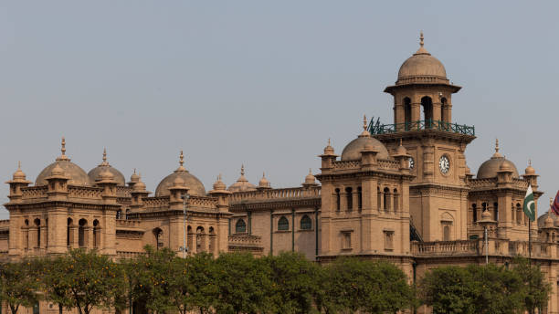

KPK is a province of Pakistan. Located in the northwestern region of the country, Khyber Pakhtunkhwa is the fourth largest province of Pakistan by land area and the third-largest province by population. It is bordered by the Pakistani provinces of Balochistan to the south, Punjab to the south-east, the territory of Gilgit-Baltistan to the north and north-east, Islamabad Capital Territory to the east and Azad Kashmir to the north-east. It shares an international border with Afghanistan to the west. Khyber Pakhtunkhwa has a varied landscape ranging from rugged mountain ranges, valleys, plains surrounded by hills, undulating submontane areas and dense agricultural farms.